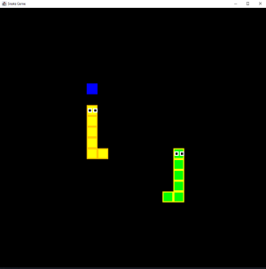
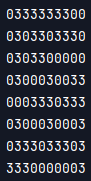
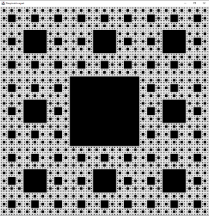
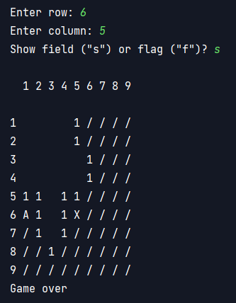
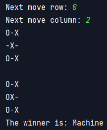
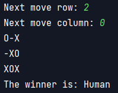

Baffi Bálint
vagyok, Java backend fejlesztőnek tanulok a Green Fox Academy szuperintenzív képzésén. Ez az oldal az utam mérföldköveit mutatja be önálló munkáimon keresztül.
- - -
Programozási alapok
OOP
Snake
A népszerű játéknak egy többszemélyes implementációját készítettem el. Élmény játszani, és az eddigi legkiforrottabb kódom OOP szempontjából.
UMLAlgoritmusok, programszerkezet
Véletlenszerű pálya generálása egy játékhoz
A fenti mátrixban a hármasok reprezentálják a falakat, a nullák pedig a bejárható területeket. Cél: egy mxn-es pályán x db "fal" véletlenszerű lerakása úgy, hogy az összes nem fal mező elérhető legyen bármelyik nem fal mezőről.
kód a rekurzív algoritmusról, az azt felbontó ciklusról, illetve a fő kódrólSierpinski szőnyeg
Miután az aknakeresőben sikeresen alkalmaztam a rekurziót a gyakorlatban, úgy éreztem, itt az ideje egy fraktálábrának. Egész tömören sikerült is lekódolnom.
kódAknakereső
.png)
Bár OOP szempontjából egyszerű feladatnak tűnt, a nullás mezők expanziója során olyan nyalánkságokat sikerült implementálnom, mint négyszeresen beágyazott iteráció ("forfor"), XOR operátor, rekurzió.
kód a fenti nyalánkságokrólAmőba
 A gép lépést keres a következő prioritások alapján:
- 1) Nyer egy lépésben, ha lehetséges
- 2) Megakadályozza, hogy nyerjek egy lépésben
- 3) Ha egyik fenti eset sem áll fent, akkor véletlenszerűen lép.
Disclaimer: ezt a kódot azon az estén készítettem el, amikor először tanultam az OOP fogalmáról. Az egységbe zárás (encapsulation) csak másnap következett, ennek fényében értékelendő a kód. Várhatóan le fogom kódolni később "rendesen" is, továbbfejleszthető formában, grafikával. Ezt itt hagyom emléknek :)
kód